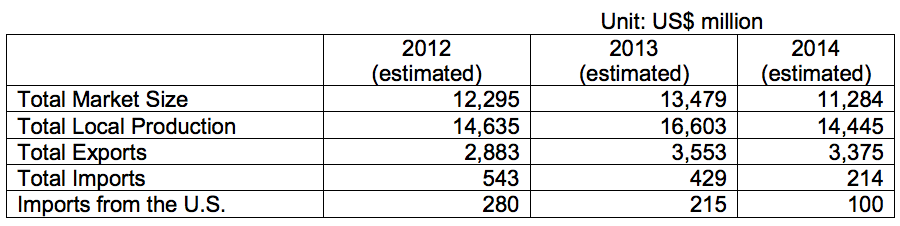
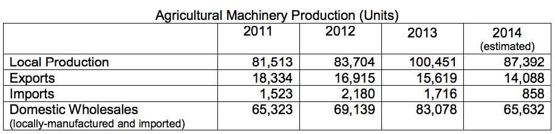

Return to top
Information on best prospects in Brazil’s agricultural sector related to food can be found at the link below:
The main point of contact in Brazil for U.S. food exporters is the Agricultural Trade Office (ATO), located in São Paulo, contact as follows: U.S. Agricultural Trade Office U.S. Consulate General
Rua Henri Dunant, 700 04709-110 São Paulo, SP Brazil Phone: 55 11 3250-5400 / Fax: 55 11 3250-5499
E-mail: atosaopaulo@usda.gov / atobrazil@usdabrazil.org.br
Brazil is a large, dynamic, and rapidly growing market for agricultural equipment. This growth is driven by an extensive commercial farming sector that itself is a major global exporter of agricultural commodities, such as soybeans, coffee, sugar, corn, meat and orange juice.
These estimated value statistics are based on official data on agricultural machinery production units per year, published by the Brazilian Automotive Vehicles Manufacturers Association (ANFAVEA). Figures include only tillers, wheel tractors, crawler tractors, combines, loaders and backhoes. The domestic industry will likely supply most of the growing demand for agricultural machinery. In 2013, according to ANFAVEA, Brazil produced 100,451 agricultural machines, 20% more than in 2012. This is mainly due to a price increase on agricultural commodities, as well as the growth of Brazil’s large and prosperous domestic market for food and other agricultural products. Imports decreased 21% in 2013, reaching 1,716 units. In 2014, it is estimated that imports will decrease by 50% and local machinery production by 13%.
The 2014 estimate for purchases in Brazil’s agricultural machinery market is around US$11 billion. Of that amount, nearly US$214 million will likely be imported, with approximately US$100 million being imported from the United States. Although Brazil’s market for machinery sales have increased considerably in recent years, rising benchmark interest rates and a reduction in interest rate subsidies for farmers mean that machinery sales growth has slowed down in recent months and has been negative since the end of 2013.
Return to top
Return to top

Brazil is a large, dynamic, and rapidly growing market for agricultural equipment. This growth is driven by an extensive commercial farming sector that itself is a major global exporter of agricultural commodities, such as soybeans, coffee, sugar, corn, meat and orange juice.
These estimated value statistics are based on official data on agricultural machinery production units per year, published by the Brazilian Automotive Vehicles Manufacturers Association (ANFAVEA). Figures include only tillers, wheel tractors, crawler tractors, combines, loaders and backhoes. The domestic industry will likely supply most of the growing demand for agricultural machinery. In 2013, according to ANFAVEA, Brazil produced 100,451 agricultural machines, 20% more than in 2012. This is mainly due to a price increase on agricultural commodities, as well as the growth of Brazil’s large and prosperous domestic market for food and other agricultural products. Imports decreased 21% in 2013, reaching 1,716 units. In 2014, it is estimated that imports will decrease by 50% and local machinery production by 13%.
The 2014 estimate for purchases in Brazil’s agricultural machinery market is around US$11 billion. Of that amount, nearly US$214 million will likely be imported, with approximately US$100 million being imported from the United States. Although Brazil’s market for machinery sales have increased considerably in recent years, rising benchmark interest rates and a reduction in interest rate subsidies for farmers mean that machinery sales growth has slowed down in recent months and has been negative since the end of 2013.

Brazil has 16 industrial production units owned by seven large agricultural equipment manufacturers, including AGCO (Massey Ferguson/Valtra), Agrale, Caterpillar, John Deere, Komatsu, Valtra and CNH New Holland Fiat Allis.
Return to top
The strength in Brazil’s agricultural sector means there is a growing demand for agricultural equipment that improves the quality and yield of crops while reducing costs. Moreover, since farms tend to be quite large, the sector is ideal for a wide range of U.S. agricultural machinery and technology. Widespread adoption of advanced commercial seed varieties has also boosted Brazil’s agricultural economy and fits well with equipment offered by U.S. industry.
The top U.S. exports prospects include sophisticated, high-technology self-propelled machinery, post-harvest machinery, including field refrigeration units/storage for tropical fruits, GPS and precision devices, poultry equipment, irrigation equipment, and fertilizers.
Market Entry
When developing a market entry strategy for Brazil, it is critical to understand the market and select an optimal partner. It is important to gain an understanding of the Brazilian context for a product or service: its competitors, standards, regulations, sales channels, and applications. Low to medium dollar equipment -- under US$50,000 -- or equipment with no Brazilian competitor can often be exported to Brazil with a traditional export/distributor model. When there is a Brazilian competitor, importers can seek import duty waivers to reduce import costs. Providing ongoing support to dealers is critical, including visits between U.S. headquarters and installation locations, as are providing trade show support and provisions for equipment demonstration. Performing due diligence on potential local partners is just as important as in any other market. Trade Barriers
Tariff rates and other trade barrier areas remain high for many types of goods and there continues be a strong preference for locally-manufactured products. High dollar value equipment faces significant import duties, making it difficult to compete; especially if there is a Brazilian competitor. While import duties, taxes and restrictions can be prohibitive, it can still be cheaper to import certain items from the USA rather than manufacturing them locally in Brazil.
Brazil is a major market for both finished equipment and parts and components. Due to high tariffs and other barriers to the importation of finished goods, Brazil is also a major market for parts and components for final assembly in local factories. Therefore, another option to minimize obstacles for imported products in Brazil is to establish local manufacturing partnerships, starting with a part-by- part analysis to determine which ones can be built locally. Local content value has to be at least 60% to qualify as Brazilian-made, in order for Brazilian farmers to access federally supported, low interest rate financing (FINAME). US companies can reduce the impact of duties by working in partnership with a Brazilian manufacturer, one that has similar but not directly competing equipment.
Standards
Under the U.S. – Brazil Commercial Dialogue, the U.S. National Institute of Standards and Technology (NIST), in cooperation with its Brazilian counterpart (INMETRO), published A Guide to Brazil’s Agricultural Machinery Compliance Requirements. The guide can be found at: http://gsi.nist.gov/global/docs/BRA_ag_machinery_guide.pdf
Opportunities
Return to top
Agribusiness is one of Brazil’s largest economic sectors. It is well diversified and the country is largely self-sufficient in food. In 2013, agribusiness was responsible for 23% of Brazil’s GDP (US$516 billion). It represented 42% of Brazilian exports (US$101 billion), and the sector employs nearly 40% of Brazil’s workforce.
Brazil’s rise as a leading market for agricultural equipment is the result of the country’s position as one of the world’s largest exporters of agricultural commodities. Soybeans and related products, sugar, coffee, corn, orange juice and meat are Brazil’s leading export commodities. Brazil’s grain production for the harvest period 2012/2013 was 189 M/t, and it is estimated that it will increase to 191 M/t for the 2013/2014 harvest period, up 1%. Soybean and corn account for the majority of grain production. Thus, reflecting a slower but still tremendous demand for agricultural machinery in the last months.
Brazil is also one of the few countries still capable of increasing its planted area. Large portions of Brazil’s cerrado (savannah or prairie region) are still available for cultivation, leaving considerable room for growth of the country’s commercial agricultural sector.
Brazilian farmers enjoy a comparative advantage in many segments, especially in the grain, fruit, fiber, and animal protein sectors. This advantage is due to a temperate climate with plenty of light and the world’s largest surface and ground fresh water reserves, in addition to an excellent quality and diversity of soils and agro-ecological systems.
Trade Event
AGRISHOW 2015 - U.S. manufacturers can present new products, technologies, and production systems to Brazilian buyers at AGRISHOW 2015, one of the largest and most important trade events of its kind in Brazil. AGRISHOW is an excellent platform to showcase state-of-the-art agricultural equipment, irrigation equipment and related services, rural communication systems, precision agriculture technology, pumps, motors, accessories, fertilizers, and related goods and services.
Web Resources
Return to top
AGRISHOW 2015 http://www.agrishow.com.br/en/
Brazilian Automotive Vehicles Manufactures Association (ANFAVEA) http://www.anfavea.com.br
For more market research reports, please visit:
http://export.gov/mrktresearch/index.asp
For more information about export opportunities in this sector, please contact Industry Specialist Vânia Resende: Vania.Resende@trade.gov